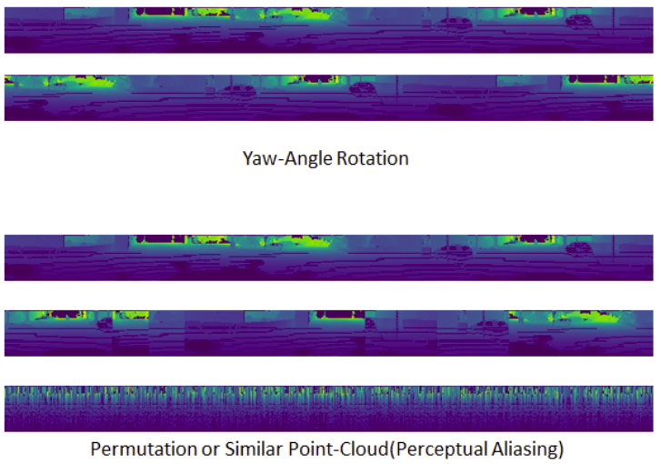
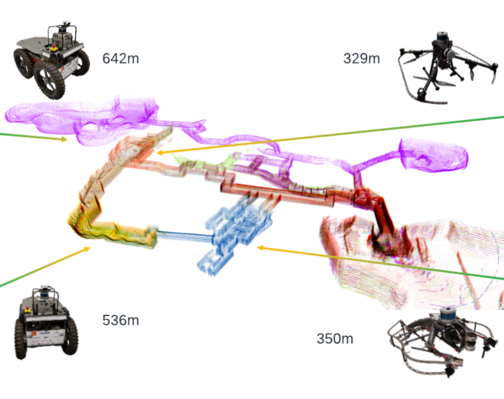
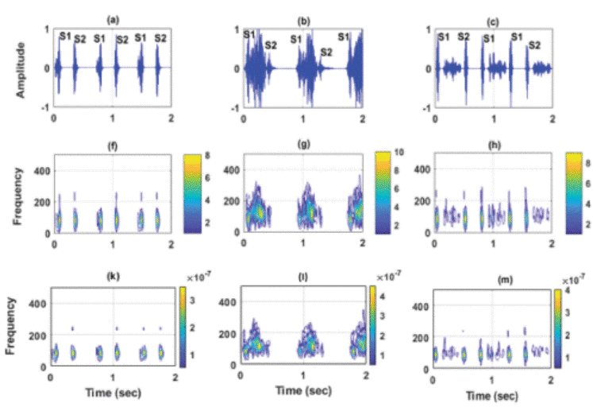
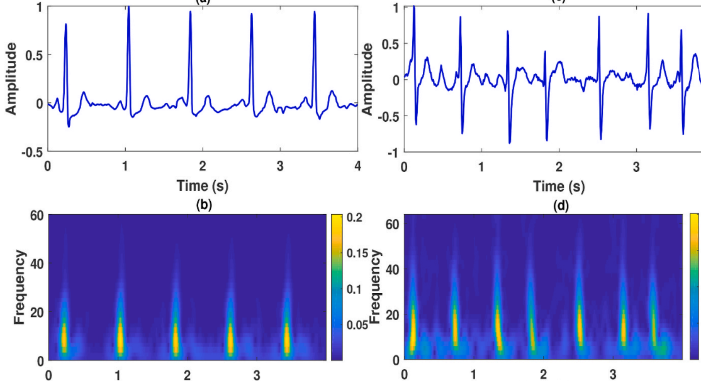

|
Jay Karhade Generalizing Multi-Modal Perception Hello! I'm a 2nd year PhD student at the Robotics Institute at Carnegie Mellon University, where I'm co-advised by Sebastian Scherer and Deva Ramanan. My goal is to build generalized perception systems that can create multi-modal and spatio-temporal representations that reconstruct and reason about the environment. In this pursuit, my work often lies at the intersection of Computer Vision, Robotics and Graphics. In between my Masters and PhD, I spent a lovely summer interning at WorldLabs. Even before, I was a carefree undergrad at BITS Hyderabad. Email / Google Scholar / Twitter / Github |

|
Recent News
|
Selected Research |

|
SplaTAM: Splat, Track & Map 3D Gaussians for Dense RGB-D SLAM
Nikhil Keetha, Jay Karhade, Krishna Murthy Jatavallabhulah, Gengshan Yang, Sebastian Scherer, Deva Ramanan and Jonathon Luiten CVPR 2024 project page / video / Paper Gaussian Splatting Meets Dense SLAM! |
|

|
Robust Lidar Place Recognition with RoPE enhanced OverlapTransformer
Jay Karhade, Sebastian Scherer Last-Mile Delivery Workshop, IROS, 2023 Short Paper Modifying OverlapTransformer and adding Rotary Positional Embeddings to make Lidar Place Recognition robust under geometric aliasing. |

|
AnyLoc: Towards universal Place Recognition
Nikhil Keetha*, Avneesh Mishra*, Jay Karhade*, Krishna Murthy Jatavallabhulah, Sebastian Scherer, K. Madhava Krishna, Sourav Garg, RAL, 2023, ICRA 2024 project page / video / Paper Combining self-supervised foundation model features from DINOv2 with unsupervised aggregation techniques to achieve zero-shot 400% improvement on Visual Place Recognition and emergence of semantic domains. |
|

|
SubT-MRS: A Subterranean, Multi-Robot, Multi-Spectral and Multi-Degraded Dataset for Robust SLAM
CVPR 2024 Paper Sub-T and Multi-Robot Dataset for SLAM applications. Currently part of ICCV 2023 Challenge. |
|

|
Time–frequency-domain deep learning framework for the automated detection of heart valve disorders using PCG signals.
Jay Karhade*, Shashwati Dash, Samit Kumar Ghosh, Dinesh Kumar Dash and Rajesh Kumar Tripathy IEEE Transactions on Instrumentation and Measurement, 2022 Paper Extract deep features time-domain and frequency-domain polynomial chirplet transform for automated detection of heart-valve disorders. |
|

|
AFCNNet: Automated detection of AF using chirplet transform and deep convolutional bidirectional long short term memory network with ECG signals
Tejas Radhakrishnan*,Jay Karhade*, Samit Kumar Ghosh, Priya Ranjan Muduli, RK Tripathy, U Rajendra Acharya Computers in Biology and Medicine, 2021 Paper Extract deep features time-domain and frequency-domain polynomial chirplet transform for automated detection of heart-valve disorders. |
|
Last updated on September 18th 2024. Website Template taken from Jon barron. |